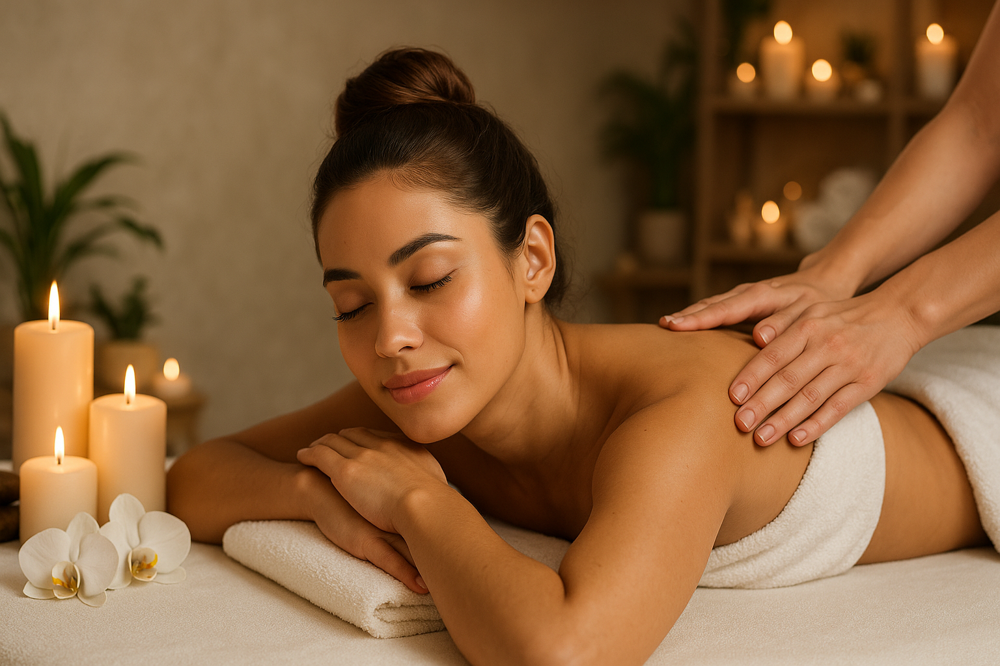
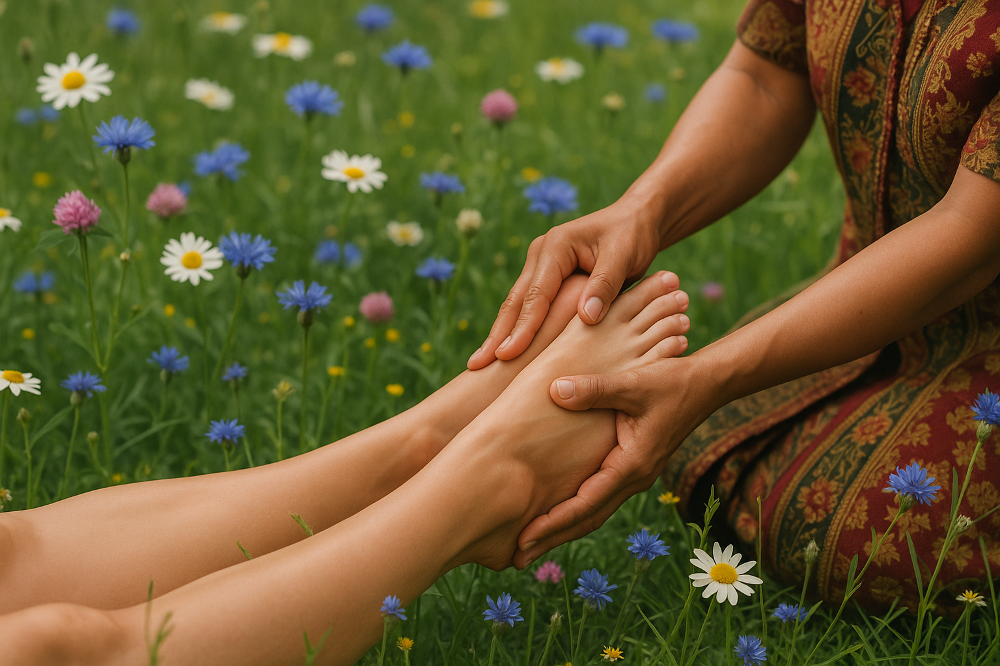

Методика основана на древних знаниях, воздействует на глубокие слои мышечной ткани. Стоимость процедуры, зависит от продолжительности времени. Время процедуры может быть выбрано вами , от 60 минут, до 120 минут. ** 60 минут — 5 000 ₽ ** 90 минут — 7 500 ₽ ** 120 минут — 10 000 ₽ Имеются противопоказания
Территория спокойствия в сердце города
Boho, вдохновленный свободой и естественностью. Погрузитесь в атмосферу Boho: натуральные материалы, этнические узоры и философия единения с природой. Ваше путешествие к балансу начинается здесь! Откройте мир, где время течёт иначе. Позвоните нам, если хотите записаться на процедуру.

Услуги
** Методика направлена на расслабление тела и снятие эмоционального напряжения. ** По вашему желанию, специалист может использовать эфирные масла doTerra. * Стоимость процедуры, зависит от продолжительности времени. Время процедуры может быть выбрано вами , от 30 минут, до 120 минут. ** 30 минут — 1 500 ₽ ** 60 минут — 2 600 ₽ ** 90 минут — 3 900 ₽ ** 120 минут — 5 200 ₽ ** Имеются противопоказания
** Расслабляющий массаж головы. ** По вашему желанию, специалист может использовать эфирные масла doTerra. * Стоимость процедуры, зависит от продолжительности времени. Время процедуры может быть выбрано вами , от 30 минут, до 90 минут. ** 30 минут — 600 ₽ ** 60 минут — 1 200 ₽ ** 90 минут — 1 800 ₽ ** Имеются противопоказания

Когда горные травы рождают освобождение от усталости. Откройтесь навстречу переменам. Приглашаем вас на уникальный ритуал перезагрузки, созданный для тех, кто жаждет сбросить напряжение и вспомнить вкус абсолютной, лёгкой свободы. 1 ** Парение — «Лесной шепот « Погрузитесь в облако целебного пара, настоянного на дуэте эвкалипта и лавра. Как будто порыв свежего ветра в густом лесу, этот воздух очистит ваше дыхание, расширит горизонты чувств и подготовит сознание к путешествию, смывая груз повседневности. * ( 30 минут) 2 ** Скрабирование — «Мятная прохлада дюн « Ваше тело станет полотном для массажа морской солью, заряженной кристальной свежестью ментола. Это не эксфолиация, а пробуждение. Ощутите, как крупинки соли, подобные песчинкам у океана, мягко отшелушивают всё отжившее, а прохлада мяты дарит коже невероятную гладкость и живительный тонус. * ( 30 минут) 3 ** Обертывание-медитация — «Древо камфоры « Насладитесь глубоким согревающим обертыванием с камфорой. Это момент, когда внешний мир перестаёт существовать. Тепло, идущее изнутри, мягко расслабляет каждую мышцу, растворяя остатки стресса, словно первые лучи утреннего солнца согревают землю после прохладной ночи. * ( 30 минут) 4 ** Согревающий массажный уход — «Тепло касаний « Руки специалиста, совершат танец под ритм вашего дыхания, используя целебную силу оливкового масла холодного отжима и эфирного масла орегано dōTERRA. Этот глубокий, согревающий уход разгонит энергию, снимет мышечные зажимы и наполнит тело силой земли, её жизненной энергией и теплом. * ( 60 минут) 5 ** Финал — «Шёпот лаванды « Путешествие завершится лёгким, почти невесомым прикосновением. На височную область будет нанесена капля чистейшего эфирного масла лаванды dōTERRA. Его умиротворяющий аромат закрепит состояние блаженства, усыпит тревоги и подарит ясность ума, чтобы вынести это состояние гармонии за пределы нашего пространства. * ( 10 минут) 6 ** Чайная церемония — «Бохо — уединение « Забудьте о счете минут. Это время, целая вселенная, сотканная только для вас. В нашем уютном уголке, наполненном ароматом сушеных трав, мягким светом солнца сквозь макраме и теплом грубой керамики, время течет иначе. Вы не просто гость, вы — главное действующее лицо. * ( 60 минут) Подарите себе состояние полёта. Верните себе право дышать полной грудью. ** Продолжительность ** ~ 3 часа, 40 минут. ** Стоимость программы — 8 000 ₽ ( один гость) ** Стоимость программы — 16 000 ₽ ( два гостя) ** Стоимость программы с 20:00 до 23:40 ** 10 000 ₽ ( один гость) ** 20 000 ₽ ( два гостя)
Любовь моря — это гимн простоте и силе природы, созданный для свободных духом. Мы создали для вас многослойный ритуал — ваш билет на побережье. Без самолетов, только чистая природа. 1 ** Парение — «Мятный Шалтим» Погрузитесь в облако целебного пара, заряженного кристально чистотой морской соли и свежестью дикой мяты. Это не просто парение, а глубокое очищение дыхания и мыслей, подготовка тела к прикосновениям. * ( 30 минут) 2 ** Скрабирование — «Дикое побережье» Груинд морской соли и целебной ламинарии мягко отшелушивает все лишнее, обнажая кожу сияющую как перламутр.Пробуждая тело и чувства к новым ощущениям. * (30 минут) 3 ** Обертывание — «Объятия ламинарии» Мы укутаем вас в питательный коктейль из ламинарии и фукуса, словно в прохладные, целебные воды моря. Вы почувствуете, как мощь морских глубин насыщает каждую клеточку, подтягивая, тонизируя и даря ощущение невесомости. * ( 30 минут) 4 ** Массажный уход — «Золотое солнце Оливы» Теплое масло оливы, струящееся по телу подобно средиземноморскому солнцу, завершит ритуал. Глубокий, расслабляющий массажный уход, впитает в себя всю силу моря и земли, запечатывая в вас состояние глубокого умиротворения. * (60 минут) 5 ** Чайная церемония — «Диалог со стихией» Это не просто чаепитие. Это момент когда с каждым глотком, вы пьете тишину и покой, могучего, но такого щедрого моря. Подарите себе возможность мягко «вернуться на берег», сохранив в сердце частицу моря. * ( 60 минут) Позвольте себе уплыть от реальности. Ваше тело станет легким, а душа — ясной и безмятежной. ** Продолжительность ** ~ 3 часа , 30 минут ** Стоимость программы — 8 000 ₽ ( один гость) ** Стоимость программы — 16 000 ₽ ( два гостя) ** Стоимость программы с 20:00 до 23:40 ** 10 000 ₽ ( один гость) ** 20 000 ₽ ( два гостя)

Очищение в ритме природы. Забудьте о суете города и позвольте себе унестись в дикий, прекрасный и щедрый мир. Наша программа — это не просто ритуал красоты, а настоящее путешествие в самое сердце цветущего луга, на опушку древней тайги, где травы шепчут древние секреты чистоты и гармонии. 1 ** Парение — «Дух Тайги» Погрузитесь в облако целебного пара, настоянного на душистом разнотравье таежных лугов. Это глубокое прогревание, которое подобно первому летнему дождю, мягко очищает поры, готовя тело и дух к таинству обновления. * ( 30 минут) 2 ** Скрабирование — «Щедрость леса» К вашей коже прикоснется не просто скраб, а крупинки соли, смешанные с грубым помолом таежных кореньев и хвои. Этот ритуал — словно прогулка босиком по лесной тропинке: она отшелушивает всё отжившее, обнажая нежную, новую кожу и даря ощущение невесомости. * ( 30 минут) 3 ** Обертывание — «Ласка темнолесья» Вас укутают в бархатный, ароматный бальзам, рожденный в чаще из смол, ягод и мощных таежных трав. Это момент глубокого диалога с природой, когда её дары проникают в каждую клеточку, выводя накопленное и насыщая силой вековых лесов. * ( 30 минут) 4 ** Массажный уход — «Сон кедровой рощи» Финал программы, танец рук массажиста под аккомпанемент густого, смолистого аромата сибирского кедра. Ценное масло, словно жидкое солнце, впитывается, завершая очищение, даря коже невероятную мягкость, а телу — чувство полного, глубокого умиротворения. * ( 60 минут) 5 ** Чайная церемония — «Травьи настои» Пока настой томиться, настаивается, рождается. Это время тишины. Время , чтобы замедлиться, подремать в лучах теплого солнца. Посмотреть как танцуют травы в воде. И услышать как само время останавливает свой бег. Это медитация втроем: вы, чаша и безмолвный луг, что ожил в ней. * ( 60 минут) Песнь Луговых Цветов — это возвращение к себе настоящему, дикому и свободному. Это гимн чистоте, спетый шепотом трав и могуществом тайги. Позвольте природе стать вашим целителем. ** Продолжительность ** ~ 3 часа , 30 минут ** Стоимость программы — 8 000 ₽ ( один гость) ** Стоимость программы — 16 000 ₽ ( два гостя) ** Стоимость программы с 20:00 до 23:40 ** 10 000 ₽ ( один гость) ** 20 000 ₽ ( два гостя)
Приглашение ощутить беззаботную теплоту летнего дня, аромат цветущих трав и цитрусовый всплеск спелого грейпфрута. Это гимн простой, но глубокой красоте, идущей от солнца. 1 ** Парение — «Солнечный ветер « Мы начинаем парение с лёгкого пара, настоянного на ромашке и цедре солнечного грейпфрута. Как будто вы лежите в поле, а над вами проносится тёплый ветер, несущий ароматы цветущего луга. Он мягко готовит тело и ум к пробуждению. * ( 30 минут) 2 ** Обтирание «Сочный грейпфрут» Освежающее и бодрящее обтирание охлаждённым грейпфрутом. Его сок, подобно утренней росе, очищает и тонизирует кожу, даря ей мгновенное ощущение свежести и лёгкой, едва уловимой терпкости. * ( 5 минут) 3 ** Скрабирование — «Мёд и соль « Натуральный скраб из кристаллов морской соли и густого цветочного мёда. Морская соль, будто вобравшая в себя силу моря, мягко отшелушивает, а тёплый мёд, словно золотые лучи солнца, смягчает и питает. Эта процедура — объятия моря и солнца, оставляющее кожу невероятно гладкой и сияющей изнутри. * ( 30 минут) 4 ** Обёртывание — «Золото облепихи « Насыщенное укутывание из облепихового масла — настоящего солнечного эликсира, цвета заката. Это глубокое питание и насыщение витаминами. Вы почувствуете, как кожа напитывается теплом и живительной силой ягод, которые словно вобрали в себя всё лето. * ( 30 минут) 5 ** Массажный уход -«Бесконечность « Завершающая нота ритуала — медленный, медитативный массажный уход с маслом оливы холодного отжима. Это масло — древний символ жизни и мудрости. Плавные, заземляющие движения мастера дарят глубокое расслабление, снимая все следы напряжения, а масло завершает преображение, даря коже шелковистость и умиротворённое сияние. * ( 60 минут) 6 ** Чайная церемония — «Солнечное сияние» Это не просто чаепитие, а плавное завершение вашего «Прикосновения Солнца». Мы предлагаем вам травяной тизан с ромашкой, тонкими дольками сушёного грейпфрута, щепоткой душистых трав и лепестками календулы. Этот напиток — жидкое воплощение всего, что вы ощутили во время ритуала: цветочно-цитрусовый аромат, лёгкая горчинка, сменяющаяся медовой сладостью и долгим, тёплым послевкусием. * ( 60 минут) Отпустите привычное и ощутите прикосновение Солнца. ** Продолжительность ** ~ 3 часа , 35 минут ** Стоимость программы — 8 000 ₽ ( один гость) ** Стоимость программы — 16 000 ₽ ( два гостя) ** Стоимость программы с 20:00 до 23:40 ** 10 000 ₽ ( один гость) ** 20 000 ₽ ( два гостя)

1 ** Парение с арома маслами, на перине из таежных трав. * (30 минут) 2 ** Массажный уход стоп. * (30 минут) ** Стоимость процедуры — 2 500 ₽ * Имеются противопоказания.
1 ** Гоммаж тела. * (30 минут) 2 ** Массажный уход спины. * (30 минут) ** Стоимость процедуры — 2 500 ₽ * Имеются противопоказания.
1 ** Гоммаж тела. * (30 минут) 2 ** Массажный уход спины. * (30 минут) ** Стоимость процедуры — 2 500 ₽ * Имеются противопоказания.
Запись на услугу
Отзывы
Это было как путешествие — не в другую страну, а в себя. Сначала парение с эвкалиптом, потом скраб с
мятой — кожа словно заново родилась. Но главное — это ощущение внутренней тишины. После обертывания я
просто лежала и чувствовала, как тело дышит. Ушла с ощущением лёгкости и ясности, будто
стерли накопившийся за год шум.
Екатерина — ритуал «Дыхание свободы»
Я не верил, что массаж может снять эмоциональное напряжение, но это сработало. Специалист работает
мягко, но уверенно. После первых 10 минут я перестал думать о делах, просто растворился в ощущениях.
Вышел как после хорошего сна — расслабленный, но собранный. Теперь хожу раз в неделю.
Максим — массажный уход «Баланс»
Идеально, если хочется быстро восстановиться. После рабочего дня я пришла просто выжатая — а через час
будто перезагрузилась. Массаж стоп — профессиональный, не просто расслабляющий, а проработанный. После
процедуры лёгкость в теле, как
после долгой прогулки босиком. Цена более чем оправдана.
Алина — экспресс-ритуал «По траве босиком»
Если честно, я не ожидала такого уровня внимания к деталям. Всё плавно, без спешки, как будто само
время замедляется. Уходила с улыбкой и ощущением, что внутри поселилось солнце.
Дарья — спа-ритуал «Прикосновение солнца»
Контакты
- Телефон
- +7 (904) 829-08-82
- Адрес
- г. Омск, ул. Красный путь, 141/1, 3 этаж
- График
- Ежедневно: 12:00–23:30